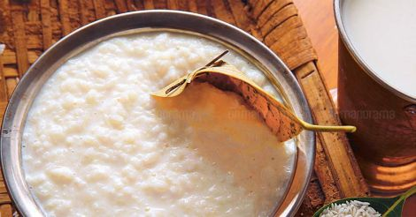

Kanji

There is nothing simpler than a good bowl of
kanji, a traditional food of a malayali. It is
light in texture, but it has energy-boosting elements
that give you the strength to face the day. It is
perfect for reviving a tired body after a long
working day.
So, let's get started right away.
INGREDIENTS
- Par-boiled rice - 1/2 Cup
- Water - 5-6 Cups
- Salt - to taste
STEPS
-
Wash the rice for at least 3 times.
-
Boil the water in a pressure cooker. When
the water starts to boil, gradually add the
rice along with a dash of salt into it.
-
Cover the pressure cooker with the lid
and cook on a high flame for 3-4 whistels.
-
Switch off the flame and wait for the pressure
to release.
-
remove the lid and stir the kanji with a ladle.
-
Adjust the consistency to suit your preference.